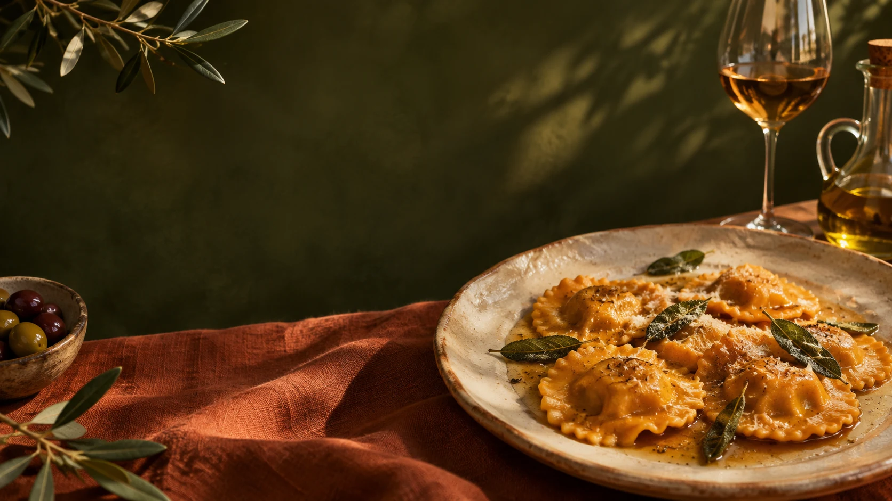
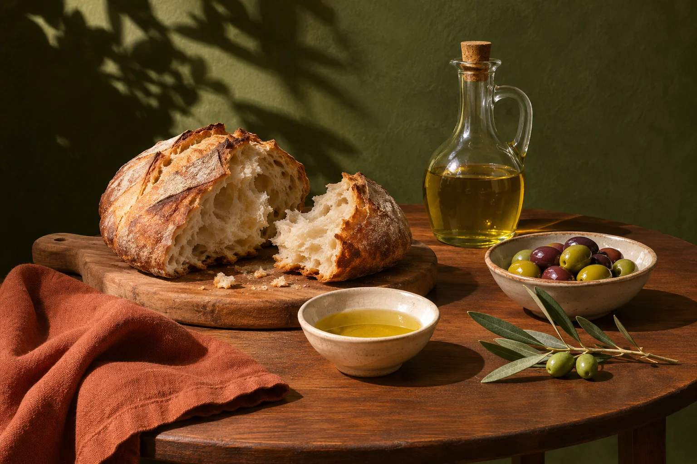
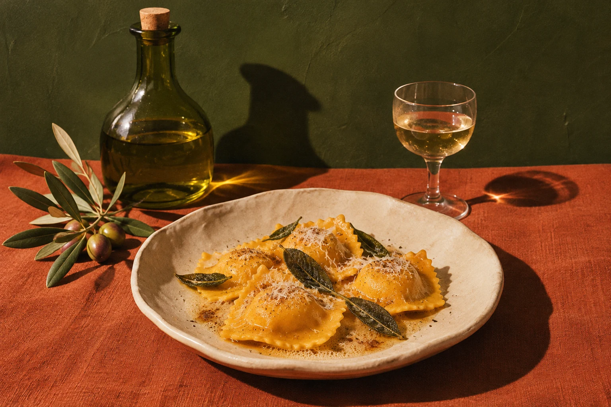
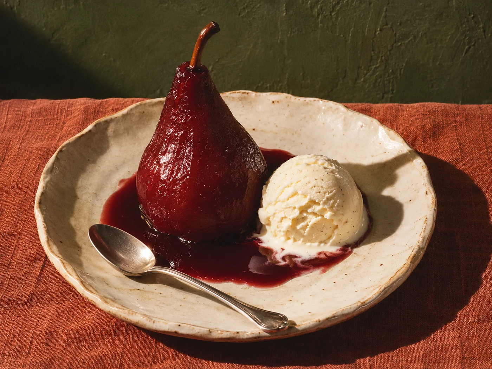

Burrata, tomatoes & basil
€14Creamy burrata, marinated tomatoes and extra virgin olive oil.
Ingredients & allergens
Welcome to Oliva
A little corner of Florence. A whole world around the table.
FLORENCE · ITALY
Discover OlivaOur story
Good bread to break. The aroma of fresh pasta. A thoughtfully chosen glass of wine. Oliva is our way of making room for the things that make life good: the simple, honest things, best enjoyed together.
In our imagined corner of Florence, the kitchen follows the season. Italian recipes, a contemporary touch and ingredients with a story to tell. Take a seat. Everything else can wait.



Made slowly. Shared happily.
GET TO KNOW OLIVAA taste of the season

THE OLIVA TABLE
A seasonal starter, a handmade pasta dish and a sweet ending. Our invitation to experience Oliva, one delicious course at a time.
Fresh from our kitchen
Creamy burrata, marinated tomatoes and extra virgin olive oil.
Ingredients & allergens



Hands, heart & season

Knead. Wait. Taste. We believe in cooking that understands the value of time and lets the ingredients do the talking.
Gather at Oliva
Birthdays, milestones and a reason to come together.
Away from the office, around something delicious.
Intimate gatherings for 8–28 guests, thoughtfully planned.
A little closer